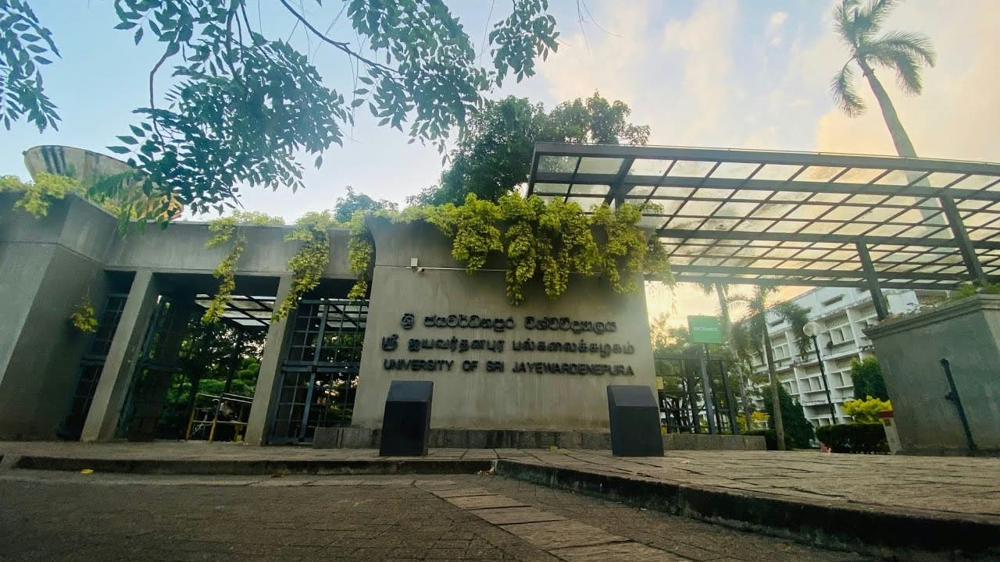

Academic year 2025/2026 students' registration is now open. Every student selected for the Faculty of Applied Sciences at the University of Sri Jayewardenepura should register according to the provided instructions before 2026.11.20
| Events | Date | Time | Venue |
|---|---|---|---|
| Career Development Programe | 2026.10.10 | 9.00 am | NFC IV |
| University volleyball compatition | 2026.10.23 | 4.00 pm | University playground |
| Applied Science Talent Show | 2026.10.31 | 10.00 am | Bandaranayaka Hall |
For Registrations:click the link
For more infomations:click the link